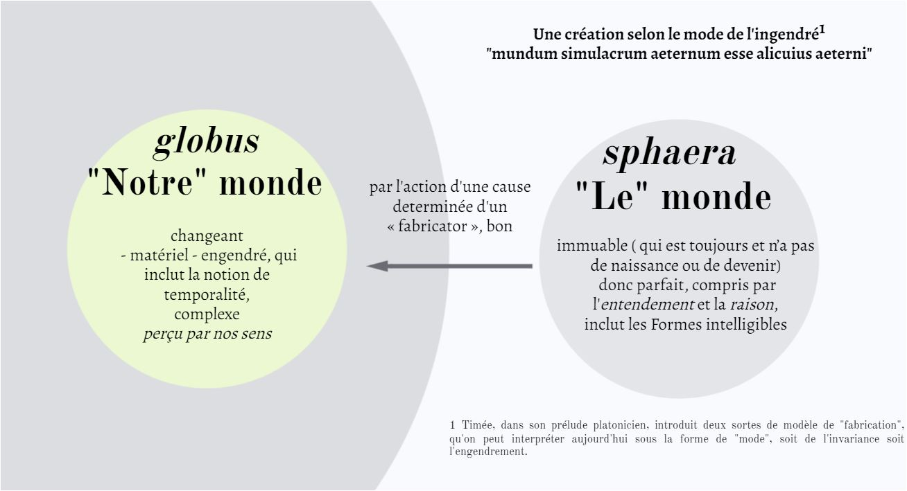

Le monde dont on va lire la création a été créé selon un mode
Quand le démiurge a engendré le monde +, il s’efforce de le rendre plus semblable encore à son modèle – un Vivant éternel – en lui donnant une âme et l’éternité.
Cicéron reprend la méthode qu'adopte Platon dans son Timée, qu'il introduit par une mise en scène de dialogue, entre trois personnages : lui-même, le pythagoricien Nigidius, et Cratippe, le célèbre Péripatéticien.
L'auteur du Timaeus emprunte la hiérarchie présente chez Platon, entre le dieu+ Démiurge qui est άριστος et le monde+ créé qui n’est, si l’on peut dire, que κάλλιστον. Elle implique une transcendance. Cela contraste avec la conception stoïcienne, selon laquelle cette transcendance est contestée, la bonté étant l’attribut de la φύσις elle-même.

Cette conception d’un monde+ né d’un geste démiurgique est présente aussi dans La Nature des dieux :
Sed cum mundo negas quicquam esse melius, quid dicis melius ? Si pulchrius, adsentior ; si aptius ad utilitates nostras, id quoque adsentior; sin autem id dicis nihil esse mundo sapientius, nullo modo prorsus adsentior, non quod difficile sit mentem ab oculis seuocare sed quo magis seuoco eo minus id quod tu uis possum mente comprendere. (Livre III, 21)
Mais quand tu dis qu’il n’y a rien de meilleur que le monde, qu’entends-tu par “meilleur” ? Si tu veux dire “plus beau”, je suis d'accord ; “mieux adapté à nos besoins”, sur ce point aussi je suis d’accord. Mais si tu veux dire que rien n’est plus sage que le monde, je ne suis plus du tout d’accord. Ce n’est pas qu’il soit difficile de détacher son esprit de la vue mais plus je l’en détache moins mon esprit peut saisir le point que tu veux établir.1
Cicéron rejoint ici le postulat du début du Timée, selon lequel le monde du devenir naît, meurt, mais n’existe jamais réellement.2
Cette création du cosmos+ induit plusieurs plans 3, avec des hiérarchies. Il faudra ainsi distinguer le dieu+ des autres entités divines 4 :
- à l'origine, le dieu « fabricator », véritable démiurge. Il donne naissance à un être vivant ayant une âme et un corps, « notre » monde.
- Dans celui-ci, il va créer une réalité cosmique visible, dans laquelle on lira une théologie physique : ont un caractère divin les astres qui ont un mouvement régulier.
- Eux-mêmes vont engendrer des divinités : mais celles-ci ne reflètent plus la perfection de celui qui a tout créé. Apparaît ici une théologie mythique, celle des daimones que Cicéron assimile aux dieux Lares.
- Cicéron nous en rapporte la genèse, avant que de préciser qu'il existe une troisième sorte de principe divin, celle qui ressort des âmes humaines - une théologie civile en quelque sorte.